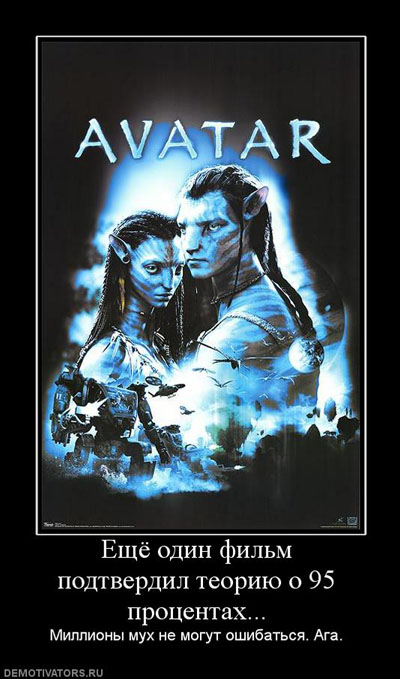

Андрей Борцов (Warrax)
Эссе о предательстве, суггестии, ученых, Родине, любви и близости к природе
|
Давно уже гнусность не была столь красиво упакована. Doppel Herz
Q: Нави такие няшечки! Как же можно их убивать? Xosh |
Уведомление:
Я понимаю, что волна рецензий на «Аватар» давно прошла, но эта работа — не об «Аватаре» как таковом, а именно что о феномене предательства. Я попытаюсь дать достаточно четкую формулировку явления и ответить на многие вопросы, которые обычно возникают в контексте «предавать — плохо, но это же не предательство», и не только на примере «Аватара». Просто этот фильм — очень уж удачное наглядное пособие.
Также в работе разбирается такое явление, как суггестия: далеко не все понимают, что логический пересказ сюжета и воздействие его на психику — далеко не одно и то же. И те, кто демонстративно плюет на коммерческую рекламу — мол, она действует только на примитивных и недоразвитых — сами радостно заглатывают наживку, если она подана в более навороченной упаковке.
Кроме того, затрагивается несколько побочных тем для более полного понимания того, куда глобалисты и либералы направляют мир.
Примечание 1: местами одна и та же подтема объясняется несколько раз — в комментариях к цитатам, когда приходится очень уж к слову, хотя уже и раскрывалось… Ничего, такие важные вещи лучше повторить неоднократно. Чтобы дошло до всех, до кого это может дойти.
Примечание 2: некоторые фразы, увы, сохранял без авторства, а поиск их почему-то не ищет…
январь, декабрь 2011
***
Файл в PDF
***
СОДЕРЖАНИЕ
ПРЕДИСЛОВИЕ
АВАТАР, РЕЦЕНЗИЯ ОТ
СВЕРТЫША
МАНИПУЛЯЦИЯ СОЗНАНИЕМ
"Троянский конь"
"Отключение критического восприятия"
АВРААМ БОЛЕСЛАВ ПОКОЙ ОБ ИСТОКАХ
НЯШИЗМА
AZESMER: ЗАЧЕМ ТАК КРАСИВА ПАНДОРА
ЛИКБЕЗ: ЧТО ТАКОЕ СУГГЕСТИЯ
Аватар, рецензия от Doppel Herz
Суггестия: загрузка
Суггестия не действует через разум
Сюжет на другом поле
Суггестия — везде!
Суггестия — не анализ!
Суггестия не сознательна
А чем докажете, что суггестия есть?
А ЧТО В ДРУГИХ ФИЛЬМАХ
И КНИГАХ?
КОРОБКА ПАНДОРЫ КРЫЛОВА
SVICTORYCH: ЭТИЧЕСКАЯ СТОРОНА СЮЖЕТА
ЧТО ТАКОЕ ПРЕДАТЕЛЬСТВО
Смена убеждений
Переход на другую сторону в войне
Якобы сложность: "хороший предатель"
Несколько нюансов и вывертов логики
Свои и чужие
ПОПЫТКИ РАЦИОНАЛИЗАЦИИ
Салли не против землян, а против корпорации!
«Сегодня он играет джаз…» от antrod
Да не землянин я ужо…
На'ви — тоже люди! Причем — именно мы!
Сергей Калугин против Родины
Такую Родину, да не предать?
Таких, как люди, и не предать?
ИНТЕЛЛИГЕНТСКИЕ ИЗМЫШЛЕНИЯ О ПРЕДАТЕЛЬСТВЕ
К.А. Крылов
А.А. Зиновьев
ПОДУМАЕШЬ, ПРЕДАТЕЛЬСТВО!
Апология измены
Выдайте зачинщиков и расходитесь!
Нет предательства, есть свобода выбора!
За свободу против Родины
НЕ РУГАЙТЕ ДЖЕЙКА — СТРЕЛЯЙТЕ В ДЖЕЙКА
ПОБОЧНОЕ
1: УЧЕНЫХ — СЛУШАТЬ, ВОЕННЫХ — НЕТ!
ПОБОЧНОЕ 2:
ПРОТИВ ТЕХНОЛОГИИ, ЗА
ЕДИНЕНИЕ С ПРИРОДОЙ
22 шокирующих цитаты мировой элиты (“End of the
American Dream”, США)
Gavagay о символическом содержании Аватара
Синдром геймера
ПОБОЧНОЕ 3: ПРО ЛЮБОФФ
Ксенофилия как норма жизни
ПРИЛОЖЕНИЕ:
КРАТКО СЮЖЕТ ФИЛЬМА, ВДРУГ КТО НЕ ВИДЕЛ
POST SCRIPTUM
Предисловие
Некогда я перепостил у себя в Livejournal рецензию Свертыша (kladun) на «Аватар», которая мне очень понравилась. Отличный анализ суггестии фильма: того, что им внушается зрителю.
К моему удивлению, далеко не все согласились с рецензией. Возражения были от «незачем искать что-то в развлекательном фильме» до «главное — это Нехорошие Корпорации». И целая куча восторгов разных видов.
Что ж, придется писать МНОГО и подробно.
Я не буду пересказывать сюжет фильма — думаю, практически все его уже посмотрели (см. краткий пересказ в приложении, или более подробный в Википедии). Также я не буду обсуждать вопросы «для чего требовался минерал Земле», «что именно он из себя представляет», «важность высокотемпературных сверхпроводников для науки и техники», «почему бы не сделать добычу минерала не открытым способом, а подкопаться наклонной шахтой», «почему на Пандоре гуманоиды — это няшные котеги, хотя основная фауна там шестиногая и четырехглазая», «почему бронежилеты будущего пробиваются примитивными стрелами» и так далее. Любая фантастика — это выдумка; конечно, приятно, если нет логических ляпов, но их наличие не мешает тому, что любой фильм/книга чему-то учит. Вы же не возмущаетесь «так не бывает!», читая сказку про Красную Шапочку, правда? А вот суггестию (см. далее) — никто не отменял. Так что мы не будем подробно разбирать сюжет, важна именно психологическая составляющая. Поговорим о том, что такое суггестия (в контексте), о предательстве, о литературе в плане аналогичных в какой-либо степени сюжетов и так далее. Когда я начал «копать» тему, она стала расширяться как бы самопроизвольно, и я понял, что вместо краткой проходной статьи «на актуальную тему» надо писать нормальное исследование по психологии и современной политике, используя «Аватар» лишь как наглядную, понятную всем иллюстрацию.